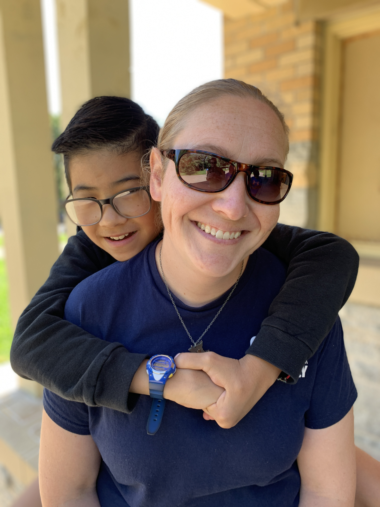

About Me
My name is Elizabeth O'Leary. I am originally from Dubuque, Iowa. I went to college at Loyola University Chicago, and moved to St. Paul after graduation.
When I moved to St. Paul, I had a job with the MN DNR. I worked state wide controlling for invasive species like Garlic Mustard and Purple Loostrife. This was a summer seasonal position and in order for the DNR to hire me back the following summer, I had to go on unemployment for 3 months. That did not seem like a great idea, since I was living on my own with no family nearby and my student loans were coming due. So I applied for a teller job at Wells Fargo. They ended up offering me a job as a personal banker which I took. When it came time to go back to the DNR I had a decision to make. Do I want to continue working somewhere that has to keep laying me off? OR do I want to work for a more stable company? (not to mention air conditioning and inside bathrooms).
I decided to stay with Wells Fargo. I worked as a personal banker for 1 year, and then moved into the mortgage business in 2006. Now if you are thinking that that seems like an ominous time to enter the mortgage industry you are correct. The next year was the start of the financial crisis. While you might think my job would have been in jeapardy, I have actually never worked so hard in any job before or since then. I worked an average of 12-14 hour days, and weekends. What I really learned from all this was how to manage stress, and work efficiently. Whenever i think something is tough or stressful, I just think back to those days and ground myself.
Eventually it was time to move on and find a job where I could have a bit more of a work life balance. I met with the CEO of a small startup bank in Edina. I really liked what they were doing, and the CEO really liked me. She called me and said "I have no idea what job I have for you, but will you come work for me and we will figure it out?" Never being one afraid to take a chance, I said sure, and went to work for MN Bank & Trust. Being a small startup bank provided me the opportunity to dabble in personal banking, private banking, wealth management, management, and operations. I was able to obtain my Series 7 and Series 66 and completed all the course work for a Certified Finanaical Planner.
While I enjoyed working in finance, and really did have a good sense for financial strategies, there was one passion in my life that was missing. That being technology. I got a call from a friend who worked in HR at Securian Financial. He said "I dont know what you are doing right now, but this job came across my desk and I immediatly thought of you." I took a look at the job and it was for Operations of a new department at securian, The Innovation Lab. I met with the head of the department, and once again was faced with a similar proposition. "I have no idea what we will be working on, or for how long, but do you want to work with us?" Well who could resist an offer like that? Not me, so I took the job.